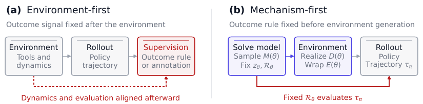
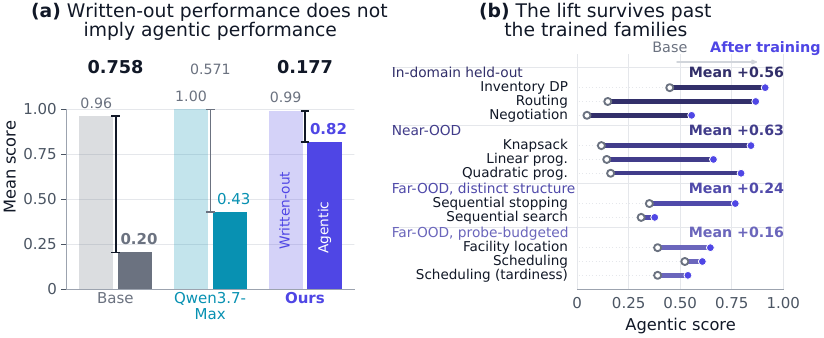
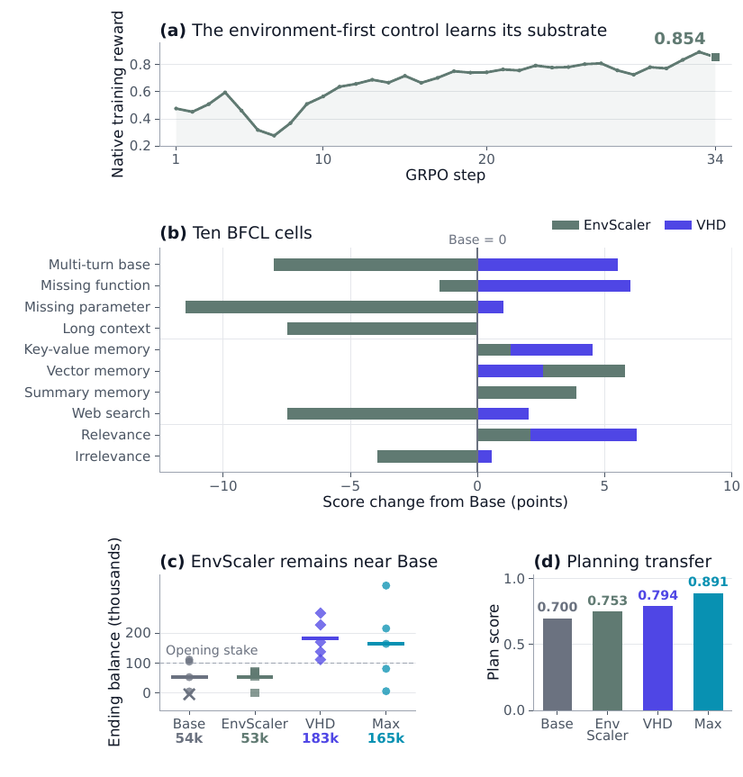

⚠️ Note bibliographique : le
.texliste 9 auteurs (Lianghao Deng inclus),meta.jsonen liste 8. Affiliations : ¹Georgia Institute of Technology (stage d'été), ²Alibaba Token Foundry — à vérifier sur la page arXiv avant citation.
TL;DR — Inverser l'ordre de construction d'un environnement RL : on échantillonne et on résout d'abord un modèle mathématique M(θ) (famille OR), ce qui fixe la référence de notation z_θ et la règle de reward R_θ ; ensuite un setter LLM gelé, ancré sur un passage de corpus réel, réalise la dynamique exécutable D(θ) et l'emballe en outils stateful E(θ). Dynamique et notation descendent donc du même objet, et la vérifiabilité est obtenue par construction plutôt que recollée après coup [§3, Eq. 1].
Claim principal, précisément : (1) la construction mechanism-first produit 3 300 environnements agentiques admis à ≈ $0,01–0,03 pièce [Tab. 1, Tab. 15] ; (2) entraîner Qwen3.6-35B-A3B en GRPO sur 3 familles fait passer le score agentique moyen d'un diagnostic 5 familles de 0,204 à 0,815, en préservant la résolution written-out (0,962 → 0,992) [Tab. 2, Tab. 11] ; (3) les gains tiennent sur 3 familles held-out + 8 familles de mécanismes jamais vues [Tab. 12] et se transfèrent hors substrat (BFCL V4 +2,84 pts, TravelBench 0,700 → 0,794, E-Commerce Bench 54 294 → 182 844 de solde final) [Tab. 13, Tab. 14] ; (4) l'essentiel de l'écart apprenable vient de l'interaction stateful, pas de la résolution du problème sous-jacent (Base : F 0,962 → I 0,231, même paramètres révélés) [Tab. 2].
Claim secondaire, le plus intéressant stratégiquement : un même checkpoint 35B peut construire des environnements plus durs qu'il ne sait les naviguer comme policy, et cet écart croît avec l'échelle du mécanisme (gain +0,412 à 6×5 → +0,861 à 11×11) → substrat d'entraînement potentiellement auto-évolutif [§4.3, Tab. 16].
Origine des tâches — ni humaines ni minées : échantillonnées depuis des familles de modèles mathématiques établis (OR), puis habillées par un LLM. θ ~ P_f fixe une instance d'une famille f ; 11 familles rapportées, chacune enregistrée via un triplet (parameter sampler, procédure de référence, adaptateur de réalisation/replay) [§3.2, App. B.1 « Family registration », App. E]. Les formulations et routines de solveur sont reprises de la littérature OR, pas inventées — les auteurs l'écrivent explicitement [App. I].
Pipeline, étape par étape [§3, Fig. 3b] :
1. Sample θ ~ P_f.
2. Solve : le solveur de famille S_f calcule z_θ = (u*(θ), u_0(θ)) — optimum et valeur d'une policy par défaut fixe. Procédures : forme close, énumération exacte, programmation dynamique, optimisation numérique. Inventaire = récursion de Bellman arrière sur l'état de stock joint ; routage = Held–Karp sur sous-ensembles de clients servis + DP sur le backlog ; facility location = énumération des sous-ensembles ouverts ; tardiness = récursion exponentielle sur sous-ensembles de jobs ; LP = HiGHS ; QP séparable = SLSQP (scipy.optimize) [App. B.1, App. E]. « No language model is called during reference computation » [App. B.1].
3. Realize (corpus-grounded) : un setter LLM gelé reçoit le vecteur de paramètres complet + un passage indépendamment échantillonné d'un corpus de documents réels + son label topique, et émet : modèle entités/relations, base de données support, ≥ 10 outils exécutables (schémas + corps), l'instruction joueur, une policy par défaut exécutable, et le format de sortie requis [§3, App. B.2]. Le passage fournit entités, relations et langue du domaine ; M(θ) fixe le processus de décision ; z_θ fixe l'évaluation.
4. Admit : tests comportementaux C1–C3 (cf. §3 du mémo), échec → régénération ou rejet.
Volume — 3 300 environnements admis : 2 200 train (3 familles), 300 held-out in-domain (100/famille entraînée), 800 unseen (100 × 8 familles) [Tab. 9, Tab. 15]. ≥ 10 outils par environnement. 28 domaines topiques, part max 4,67 %, entropie normalisée 0,997 (≥ 0,995 par famille) [Tab. 15, Fig. 8]. Épisodes : médiane 31 / moyenne 59,7 / P95 211 tours assistant [Tab. 9].
Distribution de difficulté — pas de notation de difficulté par instance. Deux proxys : (a) relative margin médiane 1,00 / P10 0,34 [Tab. 15] — définition non précisée, mais suggère que ~10 % des environnements ont un écart défaut→optimum serré ; (b) le sweep de complexité L1→L4 (6 items × 5 périodes → 11 × 11) où le score Base chute de 0,432 à 0,085 [Tab. 16].
Filtrage — pas de filtrage par pass@k du modèle de base, et c'est un choix de design notable : l'admission est purement comportementale et exécutable (exécutabilité, région de défaut admissible, accord du reward à l'optimum), jamais basée sur la difficulté pour la policy [App. A]. Taux : 65,6 % admis à la 1ʳᵉ tentative du setter, 1,41 tentative par admission en moyenne (médiane 1, max 5), 31,6 % d'interfaces d'outils réécrites [Tab. 15].
Curriculum — aucun. Un seul mélange, 3 familles (inventory DP, routing, negotiation), 34 steps, pas de ré-échantillonnage adaptatif ni d'ordonnancement rapporté [App. B.5, Tab. 9]. Le sweep L1–L4 entraîne un checkpoint séparé par niveau, ce n'est pas un curriculum [§4.3].
Contamination / séparation train-test — par construction : les instances d'évaluation sont des nouveaux tirages θ + nouveaux seeds de corpus, jamais vus ; 8 des 11 familles d'évaluation sont des familles entièrement absentes de l'entraînement [§4, Tab. 12]. Benchmarks externes (BFCL V4, TravelBench, E-Commerce Bench) « share neither instances nor interfaces » avec le substrat [§4.1]. ⚠️ Rien n'est dit sur la contamination possible de ces benchmarks externes dans le pré-entraînement de Qwen3.6 — non précisé.
Données SFT/IFT avant RL — aucune. Pas de cold start, RL directement depuis le checkpoint Base [§4, App. B.5]. (Contraste explicite avec EnvScaler qui utilise SFT+RL sur Qwen3-8B [App. D.2].)
Coût humain — « Once a family is registered, draws, realization, and admission require no per-environment labels » [Tab. 6]. Coût humain réel = l'enregistrement d'une famille (sampler + procédure de référence + adaptateur) : nombre d'heures non précisé. Coût machine : ≈ 900 tokens d'entrée / ≈ 6 300 de sortie par admission, ≈ $0,01–0,03 [Tab. 15].
Observation — vue publiée par la carte Ω_θ sur l'état s_{t+1}, strictement limitée aux retours des outils appelés. L'environnement conserve le tirage complet et la paire de référence à l'intérieur de D(θ) ; l'interface joueur n'expose que les opérations déclarées — catalogue, probe, commitment, clock — sans accès aux valeurs latentes ni aux références [§3, App. B.4]. Asymétrie formalisée : G : (θ, c) ↦ (D(θ), E(θ)) contre π : o_{≤t} ↦ a_t [Eq. 3]. Exemple inventaire : l'état enregistre le stock, les prix et un forecast visible mais potentiellement trompeur apparaissent via Ω_θ, la table de demande réelle reste cachée [§3.2, Tab. 5].
Espace d'actions & outils — quatre rôles d'interface + un utilitaire de calcul :
- catalogue / inspection : vues d'état et profils d'entités ;
- probe (A_probe ⊆ A) : révèle une vue désignée de l'état ou des paramètres cachés — p.ex. « probing one SKU reveals its complete demand trajectory across all six days » [§3.2, App. C.1] ;
- decision / commitment : modifie l'état via Λ_θ (passer commande, dispatcher une tournée, charger l'étagère) ;
- clock : avance la période (day-advance) ;
- state-independent computation (outil code/Python) : « cannot access environment internals », identique dans toutes les présentations F/I/A [App. B.4].
Signatures exactes non recopiées dans le papier (seules des descriptions en prose sont données), p.ex. pour l'inventaire : « catalogue and inventory views, a per-product demand probe, a replenishment action, a day-advance action, and helpers for capacity, holding cost, setup cost, and horizon planning » [App. C.1]. Routage : probing, route dispatch, capacity/distance checks, backlog accounting, site profiles, horizon planning [App. C.2]. Knapsack : item inspection, revenue probing, shelf-feasibility checks, subset selection, budget tracking, day advancement [App. C.3].
Point de design clé : probes et décisions consomment le même budget T de tours [§3.2] → le coût d'information est structurel, pas un terme de reward ajouté.
Multi-turn / horizon — multi-turn ; « a turn is one answered interface call » [§3.2]. Budget max 1 000 tours/épisode ; en pratique médiane 31, moyenne 59,7, P95 211 [Tab. 9]. Sur E-Commerce Bench, le checkpoint entraîné tient 1 147–1 825 tours assistant (moyenne 1 359) [§4.1, App. F.4] — soit ~23× la moyenne d'entraînement.
Gestion du contexte long — caps : génération 16 384 tokens/tour, génération cumulée 120 000 tokens, prompt 8 192 tokens, « managed context window » 65 536 [Tab. 9]. ⚠️ Le mécanisme de gestion (troncature ? résumé ? mémoire externe ?) est non précisé — lacune notable vu que les épisodes P95 atteignent 211 tours et que BFCL « long context » / « summary memory » sont justement les deux cellules à gain nul [Tab. 14].
Exécution — code Python généré, exécuté ; isolation décrite au niveau logique (séparation dynamique / interface / interpréteur) [App. B.4]. ⚠️ Sandbox, conteneurisation, timeouts, politique de reset : non précisés. Déterminisme en revanche mesuré : sur 480 exécutions de l'audit, « all 240 repeated terminal outcomes agreed » (2 passages par policy depuis état frais) [App. A].
Gestion des erreurs d'outils / sorties mal formées — non précisé côté runtime. Seul l'échec à la génération est traité : « Candidates that fail execution or interface alignment are refined or regenerated before admission » [App. B.2].
Exemple de trajectoire / d'instruction — le papier recopie 3 instructions générées. Extrait (inventaire matériel) [App. C.1] :
« You are the operations director at the Shenzhen Bay Hardware Distribution Center, managing the replenishment of three critical automation components… The planning horizon spans six days. Each day, you decide how many units of each component to order. A single shared freight truck carries at most six units across all three products, and dispatching it incurs a joint setup cost of 37.69 whenever any quantity is ordered. Each product can receive at most five units per day and has storage capacity five. Unsold inventory carries forward with a holding cost, while unmet demand incurs a lost-sales penalty. True demand is deterministic but hidden. Forecast stickers are visible but may be misleading. Probing one SKU reveals its complete demand trajectory across all six days. Maximize cumulative profit by balancing information gathering, shared truck capacity, joint setup costs, inventory carryover, and lost sales. »
Avec le tirage sous-jacent [Tab. 5] : Servo Motor X12, économie (9,37 / 2,61 / 0,89 / 0,46), forecast visible (5,5,5,2,4,1) vs demande cachée (6,5,4,2,4,2) — c'est-à-dire un forecast délibérément biaisé, ce qui fait de la policy par défaut (« act on the sticker numbers ») une ancre r = 0 non triviale [App. E].
Extraits de trajectoires (verbatim) : cf. §5 du mémo.
Type — arithmétique pure sur utilité réalisée et références pré-calculées. Aucun LLM, ni juge, ni reward model, ni rubrique n'intervient dans le chemin de notation : « No language model estimates or judges either endpoint, and both are fixed before the opening observation » [§3.3].
Formule [Eq. 4, §3.3] :
S_f : θ ↦ z_θ = (u*(θ), u_0(θ))
r(π; θ) = clip_[0,1] ( (u(π;θ) − u_0(θ)) / (u*(θ) − u_0(θ)) )
→ la policy par défaut vaut 0, l'optimum en information complète vaut 1, et le clip borne l'intervalle à une plage sémantiquement interprétable plutôt qu'arbitraire. Sous information partielle, u*(θ) est une borne supérieure non nécessairement atteignable en ligne [§3.3] — les auteurs le disent.
L'ancre basse est un choix fort : u_0 n'est pas « ne rien faire » mais une décision résolue sur des données trompeuses — agir sur les stickers, répartir tout budget partagé uniformément sur l'horizon, ne jamais probe. Pour LP/QP, le défaut appelle la même routine numérique que l'optimum, période par période, sur les coefficients visibles ; facility location énumère sur les coûts annoncés [App. E]. Autrement dit, r > 0 exige strictement de gagner de l'information, pas seulement de savoir optimiser. Hors familles d'optimisation, le défaut est spécifique : négociation = concéder 10 % par round ; stopping = accepter la 1ʳᵉ option scellée ; search = tout inspecter puis prendre le meilleur vu [App. E].
Granularité — outcome only, terminal, scalaire, crédit partiel continu sur [0,1]. « The reported implementation trains on one terminal outcome, so the policy optimizer receives no intermediate supervision » [App. I]. Le cadre est explicitement agnostique sur ce point : y^term vs y^proc_t sont posés comme choix indépendants de la provenance [App. D.3, Eq. 5].
Termes additionnels — aucun. Pas de bonus format, pas de pénalité de longueur, pas de shaping. Les coûts (probe, inspection, setup joint, backlog, lost sales) sont dans la dynamique, pas dans le reward — distinction importante.
Fiabilité du vérifieur — mesurée, et c'est le point fort du papier. Admission en 3 critères [App. A] : - C1 exécutabilité : dynamique générée et outils déclarés doivent s'initialiser et s'exécuter sans exception ; chaque policy de référence compatible doit atteindre une issue terminale numérique. - C2 région de défaut valide : l'issue par défaut doit tomber dans une région admissible définie par la famille (échelle et direction de l'objectif) ; sinon régénération. → évite les environnements dégénérés (défaut déjà optimal ou absurde). - C3 accord du reward à l'optimum : pour les familles supportant le replay, un driver de référence doit reproduire l'optimum pré-calculé à une tolérance numérique propre à la famille, en passant par l'interface générée. Le routage utilise un driver direct-interface distinct, avec la même vérification sur l'optimum et le défaut.
Audit post-génération stratifié [App. A] : 10 environnements held-out × 8 familles supportant le replay, exécutés deux fois depuis un état frais avec 3 policies (oracle π*, défaut π_0, idle π_∅) = 480 exécutions. Résultat : 0 exception, les 240 paires d'issues terminales répétées concordent, et aucune utilité rejouée ne dépasse son u*(θ) pré-calculé. Les 8/8 familles passent les 10 environnements. Ce dernier test est, de fait, un détecteur d'exploit : une dynamique générée permettant de dépasser l'optimum du modèle serait une faille de reward.
⚠️ Couverture : 8 familles sur 11 ont un replay. Négociation (induction arrière par deal), sequential stopping et sequential search (plafonds en hindsight) ont une référence calculable mais pas de driver exécutant une trajectoire correspondante [App. A, App. I]. Pour stopping et search, l'ancre haute est un plafond en hindsight qu'aucune policy en ligne ne peut atteindre — les auteurs le disent explicitement et précisent que ces lignes « compare the two arms rather than measure distance to an attainable optimum » [Tab. 10]. Conséquence : r y est compressé vers le bas et non comparable aux autres familles.
Si juge LLM — sans objet : aucun juge. (Le papier recopie en revanche les instructions générées, pas de prompt de notation puisqu'il n'y en a pas. Le prompt du setter n'est pas recopié : seule sa spécification d'entrées/sorties l'est [App. B.2] — ⚠️ lacune de reproductibilité.)
Robustesse / attaque — pas de red-teaming explicite du vérifieur. Mais trois propriétés le rendent structurellement difficile à hacker : (i) références calculées avant que D(θ) existe, donc insensibles à ce que le setter écrit ; (ii) clip à 1 + test « aucune utilité rejouée > u* » qui détecte les dynamiques exploitables ; (iii) reward = arithmétique, donc pas de surface d'attaque textuelle. ⚠️ Surface résiduelle : pour les familles sans implémentation réutilisable, c'est le setter qui écrit la dynamique [App. B.2] — la divergence D(θ) vs M(θ) n'y est contrôlée que par C1/C2, pas par C3.
Algorithme — GRPO [App. B.5, Tab. 9], groupes de rollouts d'une même instance. Écarts par rapport au GRPO standard, explicites : advantage = retour moins la moyenne du groupe, sans normalisation par l'écart-type ; aucune pénalité KL ; pas de value model. Le cadre insiste sur le fait que l'optimiseur est un choix indépendant de la construction (PPO ou autre possible) [App. D.3].
Hyperparamètres [Tab. 9, App. B.5] :
| Paramètre | Valeur |
|---|---|
| Prompts par step | 64 |
| Rollouts par prompt | 16 retenus, suréchantillonnés à 18 tentatives |
| Learning rate | 2 × 10⁻⁶ |
| Clip ratio | 4 × 10⁻³ (très serré) |
| Epochs par batch | 1 (une epoch interne) |
| KL penalty | aucune |
| Normalisation d'advantage | aucune |
| Tours max / épisode | 1 000 |
| Génération / tour | 16 384 tokens |
| Génération cumulée | 120 000 tokens |
| Prompt cap | 8 192 tokens |
| Fenêtre de contexte gérée | 65 536 tokens |
| Checkpoint rapporté | step 34 |
| Environnements consommés | 2 176 sur une partition de 2 200 |
| Rollouts scorés | 34 816 |
Cohérence vérifiée : 34 × 64 = 2 176 environnements ✓ ; 34 × 64 × 16 = 34 816 rollouts ✓ ; 39 168 tentatives générées avant filtrage du suréchantillonnage. Température de sampling en entraînement : non précisée (température 1 est mentionnée, mais seulement pour le diagnostic KL [App. F.2]).
⚠️ 34 steps seulement. Le run consomme ~99 % de sa partition d'entraînement en une epoch ; l'horizon d'optimisation est donc très court, et « step 34 is fixed before external evaluation » [App. D.2] — bon réflexe anti-cherry-picking, mais on ne sait pas si c'est la fin de la courbe ou un arrêt par épuisement du substrat.
Stabilité — aucune instabilité rapportée, aucune astuce abandonnée mentionnée. ⚠️ Combinaison « pas de KL + pas de normalisation d'advantage + clip ratio 4e-3 + 1 epoch » = un régime volontairement très conservateur ; c'est probablement là que se cache la stabilité, mais le papier ne discute pas ce choix.
Compute — non précisé : aucune GPU/TPU-heure, aucune durée, aucun coût d'entraînement. Seul le coût de génération d'environnement est chiffré [Tab. 15].
Dynamique [Fig. 7, App. F.1] — reward par famille sur 34 steps : inventory DP 0,408 → 0,904 ; routing 0,150 → 0,898 ; negotiation ~0 → 0,470. Les auteurs désamorcent eux-mêmes la lecture : « The curve establishes only that optimization proceeded… its rise cannot distinguish learning a stateful policy from fitting training instances » [App. F.1]. Longueur de réponse et entropie : non rapportées. Un proxy de dérive est donné à la place : D_KL(π_trained ‖ π_Base) = 0,089 nats/token assistant sur 96 états held-out, IC bootstrap 95 % [0,082 ; 0,097], estimé à 0,150 en début de trajectoire et 0,048 en milieu [App. F.2] — les auteurs lisent ça comme de l'élicitation de capacité plutôt que de l'acquisition.
Aucun cas de reward hacking rapporté. Le papier n'en mentionne pas un seul. ⚠️ Mon évaluation : c'est crédible ici, pour des raisons de conception, pas de chance — le reward est arithmétique sur des références fixées avant l'existence de la dynamique, clipé à 1, et l'audit teste spécifiquement qu'aucune trajectoire rejouée ne dépasse u* [App. A]. Il n'y a pas de juge à flatter ni de test à contourner. C'est précisément l'argument de vente du papier, et il est étayé par une mesure (480 exécutions) et non par une affirmation.
Surfaces résiduelles que je retiens quand même :
- Familles sans driver de replay (négociation, stopping, search) : la dynamique écrite par le setter n'est pas confrontée à la référence [App. A, App. B.2].
- relative margin P10 = 0,34 [Tab. 15] : sur ~10 % des environnements, l'écart défaut→optimum est serré → r y est bruité et un comportement quasi-défaut peut capter un reward non négligeable. Définition de la métrique non précisée.
- Stopping/search notés contre un plafond en hindsight → le reward y plafonne structurellement bas (search : 0,310 → 0,376 seulement [Tab. 12]). Ce n'est pas du hacking mais un biais de signal.
- 31,6 % des interfaces d'outils sont réécrites pendant la synthèse [Tab. 15] : le setter ajuste l'interface jusqu'à ce que le replay passe — l'accord dynamique/référence est donc partiellement obtenu par itération sur l'interface, ce qui pourrait sélectionner des interfaces « faciles à satisfaire ». Non discuté.
Failure modes de la policy (documentés, avec verbatim) [App. F.3, Tab. 12 du papier = Tab. trajectory-evidence] — trois paires base/entraîné sur des évaluations held-out, présentées comme illustratives et non comme des estimations de prévalence (les auteurs le précisent) :
| Pattern | Comportement (Base) | Détection | Contraste entraîné |
|---|---|---|---|
| Modèle myope inter-périodes | Après avoir révélé les 8 items : « For each period, find best combination within space=13 and some budget. » Dépense 27 des 29 unités de budget partagé sur les 3 premières périodes → score 0 | Comparaison appariée de traces sur la même instance | « The optimal strategy is found. Let me save it and start executing. » Plan horizon-wide des 7 périodes avant le 1ᵉʳ engagement → score 1 |
| Observation incomplète / engagement prématuré | « Item 7 is very valuable in later periods! Let me update memory and stock the shelf for period 0 », puis « Budget only 4 left. Can't afford item 7. » → score 0 | idem | « Now let me probe all 8 items to learn their true profit trajectories », puis DP sur les 7 périodes → score 1 |
| Sur-exploration coûteuse | Identifie le bon candidat après 2 inspections, puis « Let me scout a few more to ensure I'm not missing a better option » → inspecte les 14, paie 134, valeur nette −40,71 → score 0 | idem | « Any additional scouting would only reduce my net value unless I find something with an impact score dramatically higher than 93.29, which seems unlikely. » 8 inspections à 27, même choix, valeur nette 66,29 → score 0,799 |
Comportement émergent intéressant : l'apprentissage porte sur quand s'arrêter de chercher de l'information et sur la construction d'un plan couplé, pas sur la reconnaissance du problème — Base « reconnaît » le knapsack local et appelle l'outil code, mais ne construit pas le modèle horizon-wide [§4.2, App. F.3.1]. Contrôle associé : le gain n'est pas expliqué par l'adoption de l'outil code — décomposition Oaxaca–Blinder, +0,030 d'un gain de +0,443 attribuable à l'adoption accrue, +0,413 à l'intérieur de strates d'usage d'outil fixées, alors même que l'adoption passe de 50,4 % à 79,2 % [§4.2, App. F.5]. Le routage a un terme d'adoption négatif (ses épisodes Base utilisant le code scorent sous sa moyenne) [App. F.5].
Très peu renseigné — c'est la faiblesse de présentation du papier. - Débit de rollouts, sync vs async, parallélisme des environnements, goulots : non précisés. - Coût par step / par rollout d'entraînement : non précisé. Pas de GPU-heures. - Coût de génération, lui, reconstruit [Tab. 15, App. B.3] : ≈ 900 tokens in / ≈ 6 300 tokens out par admission → ≈ $0,01–0,03 par environnement admis, aux tarifs publics les plus bas trouvés ($0,05/$0,70 par M tokens in/out pour Qwen3.6-35B-A3B sur OpenRouter ; ¥6/¥18 pour l'alias temps réel Qwen3.7-Max, promo −50 %, conversion ¥7/$ ; tarifs consultés le 28 août 2026). Les auteurs notent que les tentatives supplémentaires effacent l'avantage tarifaire du petit setter : il n'est pas moins cher par admission malgré un prix/token inférieur [App. B.3]. - Comparaison de coût marginal avec l'état de l'art [Tab. 6] : VHD ≈ $0,01–0,03 par environnement admis vs EnvScaler $0,0635 par scénario, ≈ $0,08–0,09 après amortissement de la génération de skeleton ($1,024 par skeleton, chiffre d'EnvScaler). - Budget d'évaluation : seul le cadre ressources de Tab. 9 (caps de tokens et de tours).
⚠️ Pour un lecteur qui veut répliquer : le coût d'entraînement (34 steps × 64 prompts × 18 rollouts d'épisodes multi-tours allant jusqu'à 120 k tokens générés) est probablement le poste dominant, et il est totalement absent.
| Chiffre annoncé | Où il est annoncé | Source dans le papier | Verdict |
|---|---|---|---|
| « 3,300 diverse agentic environments » | abstract, §1 | Tab. 1, Tab. 9, Tab. 15 (2 200 + 300 + 800 = 3 300 ✓) | confirmé |
| « at a cost of a few cents each » / $0,01–0,03 | abstract, Tab. 1 | Tab. 15 + tarifs publics en note [App. B.3] | confirmé comme reconstruction tarifaire, pas comme dépense mesurée. Avec les tokens de Tab. 15 et les tarifs cités je retrouve ≈ $0,017 pour Qwen3.7-Max ; l'affirmation « Qwen3.6-35B-A3B is not cheaper per admission » n'est pas reconstructible depuis les chiffres publiés (tokens donnés en agrégat, pas par setter) → partiellement introuvable |
| « mean agentic score from 0.204 to 0.815 » (5 familles) | abstract, §1 | Tab. 2 et Tab. 11 (moyenne de colonne ✓) | confirmé ; à noter que le sous-ensemble « 5 familles » mélange 2 familles entraînées (inventory DP, routing) et 3 near-OOD (knapsack, LP, QP) — c'est dit, mais la formulation de l'abstract (« training on three families raises its mean agentic score… ») peut se lire comme in-distribution |
| « Gains on held-out from all three training families and eight unseen » | abstract, §1 | Tab. 12 : 11/11 familles ont ΔA > 0 | confirmé |
| « +0.56 held-out / +0.63 near-OOD / +0.24 et +0.16 far-OOD » | §4.1 | Tab. 12 : recalculé 0,563 / 0,626 / 0,242 / 0,163 | confirmé |
| « closing 84 % of the parameter-revealed stateful gap and 77 % of the full written-out-to-agentic gap » | §4.2 | Tab. 2 | confirmé sous une convention non explicitée : le plafond est le written-out entraîné (0,992) → 0,644/(0,992−0,231) = 84,6 % et 0,611/(0,992−0,204) = 77,5 %. Avec le written-out Base (0,962) on obtient 88 % et 81 %. Convention à préciser avant de citer |
| « most of the learnable gap lies in stateful interaction rather than underlying problem solving » | abstract, §4.2 | Tab. 2 : Base F 0,962 → I 0,231 → A 0,204 ; soit 0,731 des 0,758 d'écart total (96 %) imputables au passage stateful, 0,027 à l'acquisition d'information | confirmé, et même plus net que ne le suggère la formulation |
| « completes every run without bankruptcy and exceeds Qwen3.7-Max » (E-Commerce) | abstract | Tab. 8 + Fig. 6(b) : 5/5 complétions, 0 faillite, 182 844 vs 165 224 | confirmé, mais n = 5 runs et la référence Max tourne « under its API protocol », donc protocole non strictement apparié |
| « 3.4× the base ending balance » | §1, §4.1 | Tab. 13/Tab. 8 : 54 294 → 182 844 = 3,37× | confirmé |
| « improves ten interaction-focused BFCL V4 cells by 2.84 points » | §1, abstract | Tab. 14 : moyenne non pondérée 61,25 → 64,08, Δ = +2,84 ; 8 cellules montent, 2 inchangées, 0 baisse | confirmé mais formulation ambiguë : c'est +2,84 sur la moyenne des dix cellules, pas +2,84 sur chacune |
| « TravelBench 0.700 → 0.794, below Qwen3.7-Max 0.891 » | abstract, §4.1 | Tab. 13, Fig. 6(c) | confirmé (honnêteté notable : la référence Max reste au-dessus) ; ⚠️ TravelBench = 20 tâches anglaises [App. F.4] |
| « 1,147–1,825 assistant turns » sur le storefront vs « 59.7-turn generated-family average » | §4.1 | Tab. 9 (59,7) ; App. F.4 (moyenne 1 359) | confirmé |
| « A frozen 35B setter realizes larger environments, and scale-matched training retains gains » | abstract | §4.3 + Tab. 16 : gains +0,412 / +0,551 / +0,675 / +0,861 de L1 à L4 | confirmé mais sur-généralisé : une seule famille (knapsack), 4 niveaux, un checkpoint par niveau, aucun seed. L'abstract parle d'« evolving training substrate » en général |
| « the starting checkpoint can already act as the setter » | §3.2, §3 | Tab. 3 : 22/30 émis, 21/22 conservent la référence → 70 % d'admission effective vs 100 % pour Qwen3.7-Max ; tentatives 2,50 → 1,03 ; réécriture d'interface 45,5 % → 0 % | confirmé (moyennes vérifiées comme pondérées par les records émis), avec la réserve que les auteurs posent eux-mêmes : tirages non appariés, donc faisabilité et non effet causal du modèle |
| « +0.030 of a +0.443 agentic gain » attribué à l'adoption de l'outil code | §4.2 | App. F.5 / Fig. 10 : énoncé dans le texte et la figure | confirmé dans le texte, non tabulé : aucune table ne donne la décomposition par famille ; le +0,443 porte sur les 8 familles ayant les deux strates, pas sur le sous-ensemble à 5 familles (+0,611) — à ne pas confondre |
| EnvScaler contrôle : « BFCL ten-cell mean 58.56 against 61.25 for Base » | App. D.2 | Tab. 7 (recalculé : 58,561 ✓) | confirmé |
Chiffres clés
| Éval | Base | VHD-Play (step 34) | Référence | Écart absolu |
|---|---|---|---|---|
5 familles, written-out F |
0,962 | 0,992 | Max 0,999 | +0,030 |
5 familles, informed-agentic I |
0,231 | 0,875 | — | +0,644 |
5 familles, agentic A |
0,204 | 0,815 | Max 0,429 | +0,611 |
| Shortfall (F − A) | 0,758 | 0,177 | Max 0,571 | −0,581 |
| BFCL V4, 10 cellules (moy.) | 61,25 | 64,08 | EnvScaler 58,56 | +2,84 |
| TravelBench plan score | 0,700 | 0,794 | Max 0,891 / EnvScaler 0,753 | +0,094 |
| Storefront, solde final moyen | 54 294 | 182 844 | Max 165 224 / EnvScaler 52 661 | 3,37× |
| Storefront, complétion jour 365 | 4/5 | 5/5 | EnvScaler 5/5 | +1 |
In-distribution vs OOD — traité sérieusement, avec quatre bandes définies a priori [Tab. 10, Fig. 1b] : in-domain held-out (+0,56), near-OOD = autres familles d'optimisation (+0,63), far-OOD à structure de décision distincte (+0,24), far-OOD probe-budgeted (+0,16). Le gradient est propre et va dans le sens attendu : plus la structure de décision s'éloigne, moins ça transfère. Les deux pires cas sont parlants : sequential search +0,066 et scheduling +0,085 [Tab. 12].
Transfert hors substrat — trois benchmarks externes aux protocoles natifs, sans instance ni interface partagée [§4.1]. Le transfert le plus net est sur l'horizon le plus long (storefront, 365 jours), ce qui est cohérent avec la thèse « ce qui s'apprend, c'est l'exécution stateful longue ». Les deux cellules BFCL à gain nul sont « long context » et « recursive-summary memory » [Tab. 14] — soit exactement ce que l'entraînement ne touche pas (gestion du contexte).
Ablations — quatre, chacune isolant quelque chose de différent : 1. Présentation F/I/A [Tab. 2] : isole où est la difficulté. Même problème, même évaluation, même outil de calcul [App. B.4] ; seul l'accès aux paramètres change. C'est l'ablation la plus informative du papier : elle montre que révéler les paramètres ne récupère que 0,027 des 0,758 d'écart. 2. Contrôle environment-first apparié (EnvScaler) [App. D.2, Tab. 7] : même checkpoint de départ, même GRPO, même batch, même taille de groupe, même budget de 34 steps, 2 200 records, mêmes instances d'évaluation. Résultat : EnvScaler monte bien son reward natif (0,854 au step 34) et amène 5/5 runs au jour 365, mais sa moyenne BFCL baisse (58,56 < 61,25) et son solde reste au niveau Base (52 661 vs 54 294). → c'est l'ablation qui porte la revendication centrale sur l'ordre de construction. 3. Capacité du setter [Tab. 3] : 35B gelé vs Qwen3.7-Max. Établit que la réalisation n'exige pas un setter frontier (70 % vs 100 % d'admission effective), au prix de 2,4× plus de tentatives. 4. Contrôle d'adoption de l'outil code [App. F.5] : écarte l'explication « il a juste appris à appeler Python ».
⚠️ Ablation manquante, et les auteurs l'écrivent : « training uses the complete construction and does not separately attribute gains to the outcome rule and interface » [App. I]. On ne sait donc pas ce qui, du reward normalisé solveur ou de l'interface à asymétrie d'information, porte le gain.
Scaling — une seule dimension explorée : la taille du mécanisme, pas celle du modèle. Knapsack de 6×5 à 11×11 : Base 0,432 → 0,085 tandis que l'entraîné tient 0,843 → 0,946, gains croissants +0,412 → +0,861 [Tab. 16]. Interprétation des auteurs : un même checkpoint construit des environnements plus durs qu'il ne les navigue, et cet espace reste apprenable → co-scaling possible. Aucune variation de la taille du modèle policy, aucune variation du nombre de familles d'entraînement.
Solidité
- ✅ Baselines fortes et à jour : contrôle environment-first apparié sur toutes les variables d'optimisation (EnvScaler, « one of the most complete public environment-first baselines »), plus une référence modèle propriétaire (Qwen3.7-Max) [App. D.2].
- ✅ Ablations qui isolent la contribution : F/I/A et contrôle d'adoption écartent les deux explications alternatives évidentes (c'est de l'arithmétique / c'est l'outil code).
- ❌ Variance / seeds : « Generated-family results use one training run and one evaluation seed » [App. I]. Un seul IC dans tout le papier (le diagnostic KL). Storefront : 5 runs, mais la dispersion visible en Fig. 9(c) est énorme (Qwen3.7-Max va de ~0 à ~300 k) → la comparaison de moyennes à n=5 sur ce benchmark est fragile.
- ✅ Fiabilité de l'éval : aucun juge LLM dans le chemin de notation ; vérifieur audité (480 exécutions, déterminisme et non-dépassement de u* vérifiés) ; contamination structurellement exclue sur le substrat généré. ⚠️ Réserves : TravelBench n'a que 20 tâches, le storefront 5 runs, et les 3 familles sans replay reposent sur une référence non confrontée à l'exécution.
- ⚠️ Échelle : un seul modèle policy (35B-A3B MoE), 3 familles d'entraînement, 34 steps. Rien ne dit ce qui se passe à 7B ou à 200 steps.
- ❌ Reproductibilité : aucun code, aucune donnée, aucun environnement, aucun poids publiés ni annoncés. Le prompt du setter n'est pas recopié. Les signatures d'outils ne sont pas données. Ironie : le baseline (EnvScaler) est public, le papier ne l'est pas.
- ✅ Cohérence texte ↔ tableaux : toutes mes vérifications arithmétiques tombent juste (moyennes de familles, moyennes BFCL pondérées/non pondérées, 34×64×16, 22/30, 2,50 pondéré par records émis, entropie/part max). Deux réserves de formulation seulement : la convention du plafond dans les « 84 %/77 % », et le « not cheaper per admission » non reconstructible.
Verdict — plausible et bien étayé sur le mécanisme, à répliquer sur l'ampleur. La partie qui tient vraiment, c'est l'argument de construction : la vérifiabilité par ordre de construction est démontrée par une mesure (audit d'admission) et non par une promesse, et le contrôle apparié contre EnvScaler est l'un des rares du genre dans cette littérature. La partie fragile, c'est la magnitude : un run, un seed, un modèle, 34 steps, et des écarts externes mesurés sur 20 tâches ou 5 runs. Le 0,204 → 0,815 est réel mais mesuré sur une échelle que les auteurs ont eux-mêmes définie (clip entre un défaut délibérément handicapé et un optimum en information complète) — un gain de 0,61 sur cette échelle ne dit pas « 4× meilleur », il dit « passe de « à peine mieux que l'ancre trompeuse » à « proche de l'optimum omniscient » ». Le substrat n'étant pas publié, rien n'est vérifiable de l'extérieur.

Ce qu'il faut voir : le cœur conceptuel en une image. À gauche, l'ordre habituel — Environment (outils + dynamique) → Rollout → Supervision, avec la flèche rouge en pointillés « Dynamics and evaluation aligned afterward » : la règle de notation est définie après que l'environnement existe, donc son accord avec la dynamique reste à établir. À droite, l'inversion : Solve model (sampleM(θ), fix z_θ, R_θ) → Environment (realize D(θ), wrap E(θ)) → Rollout, avec « Fixed R_θ evaluates τ_π ». C'est exactement la question qu'on a pour un env juridique : qu'est-ce qu'on peut mettre dans la boîte « Solve model » quand il n'y a pas de solveur ?

Ce qu'il faut voir : (a) les trois barres de shortfall — Base 0,96 written-out contre 0,20 agentique (écart 0,758), Qwen3.7-Max 1,00 contre 0,43 (0,571), entraîné 0,99 contre 0,82 (0,177). Le point important : le modèle propriétaire le plus fort ne résout pas le problème par la taille — son shortfall reste à 0,571, soit 3× celui du 35B entraîné. La compétence mathématique et la compétence agentique sont deux axes séparés. (b) les quatre bandes de transfert en dumbbells, avec le gradient décroissant +0,56 → +0,63 → +0,24 → +0,16 : le transfert survit au changement de famille mais s'érode dès que la structure de décision change (sequential search, scheduling = les segments les plus courts).
Ce qu'il faut voir : l'ablation qui porte la thèse, et aussi la figure la plus honnête du papier. (a) le contrôle EnvScaler apprend bien son substrat (reward natif 0,854 au step 34) — l'échec n'est pas un échec d'optimisation. (b) écarts par rapport à Base sur les 10 cellules BFCL : barres vertes majoritairement négatives (jusqu'à −11 sur « missing parameter ») contre barres violettes majoritairement positives → entraîner sur un substrat environment-first dégrade le function-calling général depuis une policy 35B déjà forte. (c) la dispersion des runs storefront : 5 points par bras, Base avec un × de faillite, et un Qwen3.7-Max qui s'étale de ~0 à ~300 k — c'est ce nuage qui justifie le ⚠️ sur la variance : comparer des moyennes à n=5 sur ce benchmark est fragile, même si 5/5 complétions sans faillite reste un fait binaire solide. (d) TravelBench : la hiérarchie Base < EnvScaler < VHD < Max rappelle que le checkpoint entraîné ne rattrape pas le modèle propriétaire sur la planification contrainte.| Ingrédient | Choix du papier | Équivalent juridique | Transfert | Ce qui manque |
|---|---|---|---|---|
| Source des tâches | Tirage θ ~ P_f sur 11 familles OR pré-résolues ; corpus réel seulement pour l'habillage [§3.2, App. E] |
Familles juridiques calculables : computation de délais et prescriptions, calcul de dommages-intérêts et d'intérêts, cap tables et waterfalls de liquidation, échéanciers contractuels, tests de conformité à seuils (concentration, seuils réglementaires), partage de responsabilité. Habillage = corpus de contrats / jugements / dossiers réels | adaptable | Ces familles couvrent le juridique arithmétique, pas le juridique argumentatif. Aucun équivalent de P_f pour le raisonnement analogique ou l'interprétation |
| Vérifieur | r = clip_[0,1]((u − u_0)/(u* − u_0)), arithmétique, références pré-calculées, zéro LLM [Eq. 4] |
Pour les familles calculables : identique, transfert direct. Pour le reste : pas de u* |
direct sur un sous-ensemble, non ailleurs | Le point dur reste entier. Le papier ne résout pas « vérifier sans vérité exacte », il contourne le problème en ne construisant que des tâches qui en ont une. C'est la limite à garder en tête |
Ancre basse u_0 |
Policy par défaut compétente mais mal informée : agir sur les stickers trompeurs, ne jamais probe [App. E] | Idée la plus directement volable : ancrer le reward sur « un bon juriste qui n'a pas ouvert le dossier » — raisonner sur le résumé / les métadonnées / la première page sans vérifier les pièces, les dates réelles, la version du texte applicable | direct | Rien. Ça marche dès qu'on sait exécuter une baseline déterministe |
| Harness / outils | ≥ 10 outils par env, 4 rôles : catalogue, probe, commitment, clock, + calcul sans état [App. B.4] | Transposition naturelle : catalogue = index du dossier / base documentaire ; probe = ouvrir une pièce, lancer une recherche de jurisprudence, interroger un client, commander un rapport d'expert ; commitment = déposer, notifier, conseiller, signer ; clock = avancer dans le calendrier procédural | direct | Le papier n'a pas d'outil de citation vérifiable (pas de « la source dit-elle vraiment ça »). À ajouter |
| Coût d'information dans la dynamique, pas dans le reward | Probes et décisions consomment le même budget T [§3.2] ; famille sequential search avec coût d'inspection explicite [App. E] |
Le temps facturable, le coût d'un expert, le délai de forclusion sont déjà des contraintes de budget naturelles en droit | direct | Rien — c'est même plus naturel en droit que dans le papier |
| Asymétrie d'information | Le builder voit θ et z_θ ; le player ne voit que ce que Ω_θ publie [Eq. 3, App. B.4] |
Le constructeur connaît l'issue du dossier (jugement rendu, clause litigieuse, fait dissimulé) ; l'agent doit la reconstituer par des probes | direct, et c'est le meilleur fit | Le besoin d'une vraie séparation de processus : un dossier réel contient souvent sa propre réponse en texte clair |
| Algo | GRPO sans KL, sans normalisation d'advantage, clip 4e-3, 1 epoch, 34 steps, reward terminal scalaire [Tab. 9] | Réutilisable tel quel | direct | Rien de spécifique au droit. ⚠️ Mais reward terminal unique sur un dossier de 200 tours = crédit très dilué |
| Curriculum | Aucun. Mais sweep L1–L4 montrant que le gain croît avec l'échelle du mécanisme [Tab. 16] | Échelonner : nombre de parties, nombre de pièces, longueur du calendrier procédural, nombre de juridictions | adaptable | Le papier entraîne un checkpoint par niveau — il ne démontre pas qu'un curriculum fonctionne |
| Anti-hacking | Références fixées avant l'existence de la dynamique + clip à 1 + audit « aucune utilité rejouée > u* » sur 480 exécutions [App. A] |
Appliquer littéralement : auditer que l'oracle, le défaut et la policy inerte produisent les scores attendus sur un échantillon held-out de dossiers générés | direct | Ne couvre pas le hacking d'un juge LLM, qui sera inévitable sur les tâches argumentatives |
| Diagnostic F/I/A | Même problème en written-out / paramètres révélés / paramètres à acquérir [Tab. 2] | Harvey LAB / Vals en 3 versions : (F) tous les faits et la source dans le prompt ; (I) mêmes faits mais via des outils stateful ; (A) faits à découvrir par recherche documentaire | direct | Rien — c'est un protocole d'évaluation, pas un env. Faisable immédiatement |
Meilleur ingrédient à transposer — non pas le pipeline OR, qui ne se transpose pas, mais le triptyque (1) ancre basse = baseline compétente-mais-non-informée, (2) coût d'information dans la dynamique, (3) audit oracle/défaut/inerte de l'environnement. Raison : ce triptyque est le seul moyen, dans le papier, d'obtenir un reward qui force l'acquisition d'information sans rien ajouter au reward lui-même — et c'est exactement le comportement qu'on veut d'un agent juridique (vérifier la version applicable du texte, ouvrir la pièce, contrôler la citation) et exactement celui qu'un juge LLM sur réponse finale n'encourage pas. Le résultat I = 0,231 est le chiffre à retenir : révéler l'information ne suffit pas, le déficit est dans l'exécution stateful. Pour Gemini Law, ça veut dire qu'un benchmark de type QA sur dossier complet (Vals) sous-estime structurellement le déficit agentique — Qwen3.7-Max est à 1,00 en written-out et 0,43 en agentique.
Expérience minimale — deux étages, dans l'ordre. 1. (quelques jours, aucun entraînement) Diagnostic F/I/A sur le périmètre Harvey LAB. Prendre 50–100 tâches où les faits sont aujourd'hui dans le prompt ; produire (I) une version où les mêmes faits ne sont accessibles que par des outils stateful (index + ouverture de pièce + horloge procédurale) et (A) une version où il faut les chercher. Même notation dans les trois cas. Résultat attendu : si le papier se transpose, un écart F→I de l'ordre de 0,5–0,7 en score normalisé, c'est-à-dire l'essentiel du déficit apparaît avant même l'étape de recherche. Si l'écart F→I est petit et F→A grand, le problème juridique est un problème de retrieval et pas d'exécution stateful — conclusion opposée, tout aussi actionnable. 2. (1–2 mois) Une famille juridique pré-résolue, p.ex. calcul de délais et prescriptions multi-juridictions, ou waterfall de liquidation. Sampler de paramètres + référence calculable + policy par défaut = « raisonner sur la note de synthèse sans ouvrir les pièces ni vérifier la version du texte ». Habiller par un setter gelé sur un corpus de contrats/dossiers réels. GRPO, reward Eq. 4. Résultat attendu : gain in-distribution large (c'est acquis), et surtout mesurer le transfert vers Harvey LAB / Vals — c'est le seul chiffre qui compte. Le papier obtient +2,84 BFCL / +0,094 TravelBench depuis un substrat OR ; un substrat juridique devrait faire mieux sur des cibles juridiques, sinon l'approche ne vaut pas son coût de construction.
Question à poser en interne chez GDM — deux, et elles sont liées :
1. Avons-nous, ou pouvons-nous construire, l'ancre basse ? Toute la méthode repose sur u_0, une baseline exécutable et déterministe qui agit sur l'information visible sans vérifier. En droit, est-ce qu'on sait instrumenter « le juriste qui n'ouvre pas le dossier » de façon reproductible ? Si oui, on a un reward normalisé sans juge sur tout le périmètre calculable. Si non, la recette ne démarre pas.
2. Le déficit de Gemini sur Harvey LAB est-il un déficit de droit ou un déficit d'exécution stateful ? Le papier dit que, sur son substrat, 96 % de l'écart est de l'exécution, pas du contenu — et que cet écart se répare en 34 steps de GRPO sans SFT. Si le diagnostic F/I/A donne le même verdict côté juridique, la priorité de post-training n'est pas d'injecter plus de connaissance juridique mais de construire un harness stateful (dossier, horloge procédurale, coût de vérification) — un chantier d'infra, pas de données.